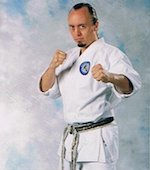

The Northwest Budokan is one of the longest standing martial arts schools in the Vancouver, Washington area. Established in October of 1996 by Zachary Hanks, the school has promoted the dissemenation of three traditional martial arts: Shotokan Karate, Japanese Ju-Jitsu, and Ryukyu Kobudo.
As an established expert with twenty-five years of training in Japanese martial arts, Hanks is referred to by the title “Sensei”, meaning “one who has been before” or more colloquially, “instructor”. Sensei Hanks created the entire curriculum for the program, and oversees all instruction, lesson plans, promotions, specialty seminars, and extra-curricular events. Sensei Hanks holds many competitive karate titles in fighting, forms, and weapons. He has also received much acclaim for his success as a children’s coach, and as a nationally certified referee.
The Northwest Budokan is located at Naydenov Gymnastics, in the rear of the second gym. Naydenov's is located near the Vancouver Mall. Classes are ongoing throughout the year, taking place on Tuesday and Thursday evenings from 5:30 pm - 7:30 pm.